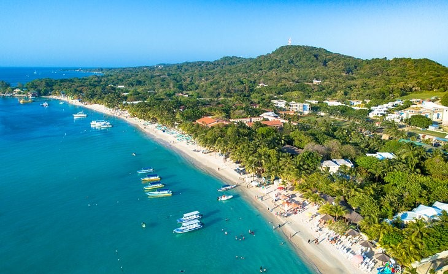
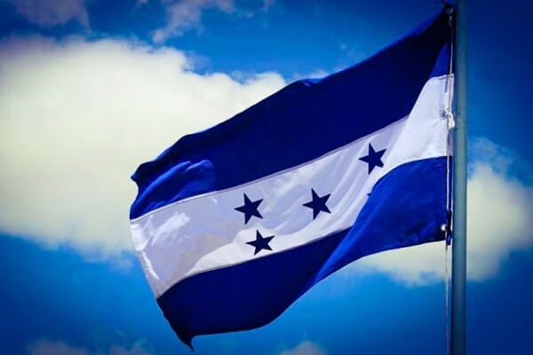

 Honduras es un país de América Central con costas en el mar Caribe al norte y en el océano Pacífico al sur. En el bosque tropical cerca de Guatemala, el antiguo sitio ceremonial maya de Copán tiene jeroglíficos tallados en piedra y estelas, altos monumentos de piedra.
 En el mar Caribe, se encuentran las Islas de la Bahía, un destino para el buceo que forma parte de la Barrera de Coral Mesoamericana.